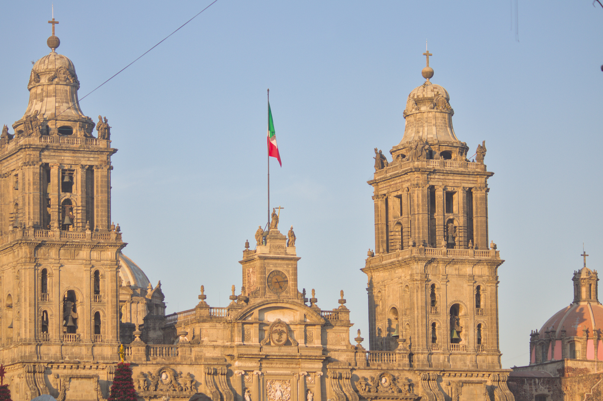
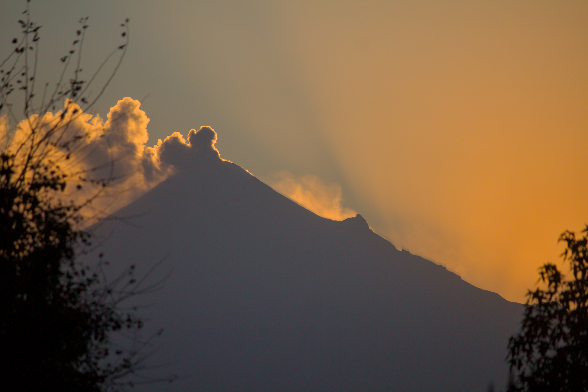

Under the Aztec Sky: The Chronicles of a Reunion
I. Arrival in the Aztec Country
The journey had begun, and with it, a new adventure. As the plane soared through the skies toward Mexico City, I was immersed in thoughts filled with anticipation and excitement. This was no ordinary trip; it was a long-awaited reunion with my mother and brother after years of communicating exclusively through screens. The holiday season was the perfect setting for this reunion, although the fact that I would be returning on December 31 to welcome the New Year in Colombia with my partner added a touch of melancholy. Their absence on this trip was deeply felt, one of those absences that tint joys with a slight shade of sadness. Nervousness was also present. I had heard stories of compatriots being denied entry to Mexico, so I made sure to be prepared: a folder full of necessary documents and a thorough knowledge of immigration requirements. Although Colombians do not need a visa to enter, the documentary requirements can be overwhelming. My previous experience traveling to Europe and the Caribbean gave me some confidence, but airports are always unpredictable terrain. Fortunately, luck was on my side from the start. The flight wasn’t full, which allowed me to enjoy some extra space and, to my delight, a second meal thanks to leftover service portions. Eating well always makes flights more bearable, even relatively short ones like this five-hour trip. Landing at Benito Juárez International Airport, named after the legendary Mexican president, marked the official beginning of my adventure. The view of the city from the air was breathtaking: an endless swarm of lights that seemed to defy the horizon itself. At the airport, my mother was eagerly waiting. I imagined the moment of embracing her, the warmth of her hug dissolving the years of distance in an instant. The journey to the apartment also carried its share of excitement. My younger brother, who believed I would arrive three days later, had no idea that I would appear just in time to celebrate his birthday. It was a carefully planned surprise, a small conspiracy between my mother and me to make that day unforgettable. I pictured his expression when he saw me walk through the door and how that unexpected reunion could be the best gift of all. That first night in Mexico City promised to be filled with emotions. There would be laughter, endless conversations, and that indescribable connection that only comes from being face-to-face with loved ones. After so much time apart, words would flow naturally, and the silences, far from being awkward, would be moments to savor each other’s presence. More than a reunion, it would be a return home, to the warmth of a family that, despite distance and time, remained my safest refuge. The arrival in the Aztec country was not only the beginning of a vacation but also a reunion with my roots, my affections, and, in a way, myself. The promise of discovering or rediscovering Mexico was there, waiting, full of colors, flavors, and emotions that, as I would soon find out, would make this trip an unforgettable experience.
 II. First Night in Mexico City
II. First Night in Mexico City
My arrival in Mexico couldn’t have been more spectacular. As I stepped off the plane, I was greeted by the warmth of my mother and her partner, whose smiles reflected the excitement of our reunion. From the airport, we headed straight to the iconic Plaza Garibaldi, a place steeped in history and tradition that promised to immerse me in the musical and festive soul of Mexico. Named after Giuseppe Garibaldi, an Italian-born hero whose grandson defended Mexico during the U.S. intervention of 1914, the plaza is much more than a gathering place. In this vibrant and picturesque location, mariachis have congregated since the 20th century to offer their music to the public, making it a hub of culture and joy. The nighttime atmosphere was electric: guitars, trumpets, and voices resonated in unison, creating a symphony that seemed to envelop every corner. We visited the legendary Salón Tenampa, a venue that, since its opening in 1925, has been a symbol of Mexico City. Founded by Juan Indalecio Hernández Rojas and named after a town in Veracruz, the salon is renowned for popularizing mariachi music and being a stronghold of Mexican tradition. Seated at its tables, surrounded by murals that told stories of the past, I let myself be carried away by the most authentic experience one could imagine. There, I enjoyed an exquisite birria, a deep and aromatic broth with goat meat, whose flavor transported me straight to the heart of traditional Mexican cuisine. The drinks soon followed: I sampled an endless selection of tequilas, each more refined than the last, and even dared to try a shot of mezcal, whose smoky flavor surprised me with every sip. Meanwhile, a group of mariachis surrounded our table. Their songs were a celebration of life and passion; we sang along with them, our voices intertwining with the music in a moment that felt eternal. After this unique experience, we returned home. The surprise wasn’t over: I woke my younger brother to wish him a happy birthday. His sleepy expression quickly turned into joy when he saw me. We continued the celebration in the intimacy of our home, sharing stories, laughter, and a few more drinks. The night stretched into the early morning, and although sleepiness began to set in, the warmth of our reunion made every minute worthwhile. That first night in Mexico City was magical, a beginning that set the tone for what would be an unforgettable journey. Between the music, the flavors, and family, I experienced a welcome that reminded me of the powerful act of sharing and celebrating the traditions that unite us.
III. Chapultepec Park Zoo
 In the days following my arrival, Chapultepec Park became our destination. This vast and legendary space, one of the largest and oldest in the world, holds a historical and natural wealth within its trails that is impossible to ignore. Its vastness, an endless green oasis, enveloped me in a sense of calm and wonder. With every step, the noises of the metropolis faded away, replaced by the whisper of the wind through the trees and the songs of the birds.
This park, considered sacred by the Mexicas, was transformed during the colonial era into a recreational and residential space for the viceroys. Later, it became a public area that now welcomes thousands of visitors. Its name, "Chapultepec," comes from Nahuatl and means "hill of the grasshopper," a reference that makes sense when observing its undulating landscape.
One of the park's jewels is the majestic Chapultepec Castle, standing imposingly atop a hill. However, the main attraction for me that day was the Chapultepec Zoo, a place rich in history and biodiversity, inaugurated in 1924 and considered one of the most important in Latin America.
Accompanied by my brother and one of his friends, we spent the day exploring this animal refuge. Although some of the most iconic species, such as the giant panda and the lion, were not on display, the diversity before us was impressive. From majestic felines to vibrantly colored birds, each exhibit seemed to transport us to a different corner of the planet.
The day was filled with fascination and discovery, but also exhaustion. Hours of walking led us to explore much of the park, leaving our legs sore by the end of the day. However, that physical fatigue was overshadowed by the satisfaction of having experienced something so enriching.
We returned home with fresh memories and shared conversations from our walk. Chapultepec Park, with its mix of history, nature, and wildlife, left a deep impression on me. This day was not just a tour of its trails but also an invitation to reflect on the beauty and importance of preserving spaces like this, where humanity and nature coexist in harmony.
In the days following my arrival, Chapultepec Park became our destination. This vast and legendary space, one of the largest and oldest in the world, holds a historical and natural wealth within its trails that is impossible to ignore. Its vastness, an endless green oasis, enveloped me in a sense of calm and wonder. With every step, the noises of the metropolis faded away, replaced by the whisper of the wind through the trees and the songs of the birds.
This park, considered sacred by the Mexicas, was transformed during the colonial era into a recreational and residential space for the viceroys. Later, it became a public area that now welcomes thousands of visitors. Its name, "Chapultepec," comes from Nahuatl and means "hill of the grasshopper," a reference that makes sense when observing its undulating landscape.
One of the park's jewels is the majestic Chapultepec Castle, standing imposingly atop a hill. However, the main attraction for me that day was the Chapultepec Zoo, a place rich in history and biodiversity, inaugurated in 1924 and considered one of the most important in Latin America.
Accompanied by my brother and one of his friends, we spent the day exploring this animal refuge. Although some of the most iconic species, such as the giant panda and the lion, were not on display, the diversity before us was impressive. From majestic felines to vibrantly colored birds, each exhibit seemed to transport us to a different corner of the planet.
The day was filled with fascination and discovery, but also exhaustion. Hours of walking led us to explore much of the park, leaving our legs sore by the end of the day. However, that physical fatigue was overshadowed by the satisfaction of having experienced something so enriching.
We returned home with fresh memories and shared conversations from our walk. Chapultepec Park, with its mix of history, nature, and wildlife, left a deep impression on me. This day was not just a tour of its trails but also an invitation to reflect on the beauty and importance of preserving spaces like this, where humanity and nature coexist in harmony.
 IV. Chapultepec Park and Avenida Reforma
IV. Chapultepec Park and Avenida Reforma
Two days after my visit to the zoo, I decided to return to Chapultepec Park, this time alone. The experience of exploring it at my own pace allowed me to appreciate every detail with a different sense of calm. The vastness of the park unfolded before me like a vast canvas of nature and culture, offering unexplored corners I was eager to discover. My first stop was the lake, where dozens of people enjoyed boat rides, renting them to navigate its tranquil waters. The scene had an almost hypnotic serenity: the reflection of the sky on the surface, the distant laughter of those rowing, and the rhythmic sway of the small boats created an atmosphere of absolute peace. From there, I continued to the botanical garden, an oasis within the park itself. The diversity of flora was impressive, with a collection of exotic and native plants that stood out for their colors and uniqueness. What caught my attention the most were the cacti, whose shapes ranged from classic spiny structures to surprising sculptural forms that seemed to defy the laws of nature. Every corner of the garden invited contemplation and the urge to capture its beauty in photographs. After immersing myself in that green microcosm, I made my way toward the exit that directly connects to the iconic Avenida Reforma. This avenue, one of the most emblematic in Mexico City, is much more than a traffic route: it is a corridor of history, art, and modernity. Along its path, numerous roundabouts house imposing monuments narrating different episodes of Mexican history, but none as famous as the Angel of Independence. As I approached, I was met with the majestic golden sculpture, rising with an almost celestial grace. Its posture, with one leg raised, wings extended, and a laurel crown held high, symbolized liberation and triumph. The broken chain in its other hand reinforced the message of emancipation, a powerful symbol in the heart of the city. I took a moment to admire its grandeur, reflecting on the historical significance it carried. As I continued down Reforma, my eyes wandered across the architecture rising on both sides. Between modern skyscrapers and more classic structures, the avenue felt like a living testament to the city's evolution. Along the way, I also passed by an improvised market stretching several blocks. Its vibrant array of handicrafts, jewelry, and traditional snacks was a feast for the senses, a small universe within the city's hustle and bustle. At the end of the day, I returned home with a serene satisfaction. This solo walk had allowed me not only to admire the city's beauty but also to connect with it in a more introspective way. Christmas Eve was approaching.
V. Family and Hallacas
 The night before Christmas Eve was marked by a tradition as deeply rooted as it was endearing: the preparation of hallacas. This dish, a hallmark of Venezuelan Christmas, is much more than a recipe; it is a ritual that unites the family around the kitchen, connecting generations through memory and flavor.
While we all participated, I must admit that my initial role was modest. My first task was to clean the plantain leaves, a fundamental step since these would serve as the wrapping to protect the dough and filling. It was a meticulous, almost meditative process that allowed me to immerse myself in the importance of detail within traditional cooking.
Later, we sat at the table: my mother, my brother, a cousin, and I. Amid laughter and conversation, each of us took on a role in the preparation: spreading the dough, distributing the filling, and carefully folding each hallaca. My final task was tying them, an art in itself. The tension had to be just right: firm enough to keep them sealed during cooking but not so tight as to tear the leaf. For my first time, the result was satisfying, as none of them opened in the boiling water.
After two hours of cooking, the aroma announced they were ready. On December 24, with the festive spirit at its peak, we enjoyed the fruits of our joint effort. The dinner was accompanied by the warmth of family, and after the meal, we gathered under the Christmas tree to open presents. The joy extended well into the night.
Christmas Day was a perfect contrast. After the hustle and bustle of the night before, the 25th unfolded in absolute calm. We indulged in rest, enjoying the simple pleasure of being together without rush or obligations. It was a perfect ending to a celebration that, beyond the flavors, was truly about family and shared time.
The night before Christmas Eve was marked by a tradition as deeply rooted as it was endearing: the preparation of hallacas. This dish, a hallmark of Venezuelan Christmas, is much more than a recipe; it is a ritual that unites the family around the kitchen, connecting generations through memory and flavor.
While we all participated, I must admit that my initial role was modest. My first task was to clean the plantain leaves, a fundamental step since these would serve as the wrapping to protect the dough and filling. It was a meticulous, almost meditative process that allowed me to immerse myself in the importance of detail within traditional cooking.
Later, we sat at the table: my mother, my brother, a cousin, and I. Amid laughter and conversation, each of us took on a role in the preparation: spreading the dough, distributing the filling, and carefully folding each hallaca. My final task was tying them, an art in itself. The tension had to be just right: firm enough to keep them sealed during cooking but not so tight as to tear the leaf. For my first time, the result was satisfying, as none of them opened in the boiling water.
After two hours of cooking, the aroma announced they were ready. On December 24, with the festive spirit at its peak, we enjoyed the fruits of our joint effort. The dinner was accompanied by the warmth of family, and after the meal, we gathered under the Christmas tree to open presents. The joy extended well into the night.
Christmas Day was a perfect contrast. After the hustle and bustle of the night before, the 25th unfolded in absolute calm. We indulged in rest, enjoying the simple pleasure of being together without rush or obligations. It was a perfect ending to a celebration that, beyond the flavors, was truly about family and shared time.
VI. Val’Quirico, a Magical Little Town
On December 26, we set out on a trip to a unique destination: Val’Quirico, a picturesque tourist complex located in the state of Tlaxcala. As we drove along the highway, the landscape offered us an imposing view: the Popocatépetl and Iztaccíhuatl volcanoes, eternal guardians of the region, rose majestically on the horizon. These natural colossi are not just geographical wonders but also the protagonists of an ancient legend. It is said that Popocatépetl, a brave warrior, deeply loved the beautiful Iztaccíhuatl. However, their love was tested by the young woman's father, who demanded that he return victorious from war before allowing their marriage. A jealous rival spread the false rumor of Popocatépetl’s death, leading Iztaccíhuatl to succumb to sorrow and pass away. Upon returning and finding her lifeless, Popocatépetl carried her to the top of a mountain, lit a torch, and swore to watch over her for eternity. The gods, moved by his love, transformed them into mountains: she into the sleeping silhouette of Iztaccíhuatl, "The Sleeping Woman," and he into Popocatépetl, which still smokes today as a symbol of his eternal vigilance. Finally, we arrived in Val’Quirico, a small and charming village that emulates the medieval Tuscan style. Its cobbled streets, rustic architecture, and flower-adorned balconies transported us to a fairytale setting. Since it was the holiday season, the atmosphere was magical, with twinkling lights decorating the alleys, forming an artificial starry sky that still conveyed warmth and nostalgia. We spent the night there, enjoying its atmosphere and exploring its corners filled with galleries, artisan shops, and cultural events. The next day, before leaving, we had lunch at a restaurant specializing in exotic meats. I ventured to try crocodile meat, whose flavor and texture surprisingly reminded me of chicken. I also tasted ostrich meat, which was closer in taste to beef than I had imagined. With satisfied palates and memories full of unforgettable images, we headed back to Mexico City, carrying with us the essence of a place that, although artificial, managed to capture the magic of bygone times with a charming authenticity.
VII. Historic Center
 In the last days of my trip, we decided to visit an aunt I hadn’t had the chance to see before. Her three young daughters, born in Mexico, were new faces to me, as they had never traveled to Venezuela or Colombia. It was a meeting filled with joy and curiosity, marked by laughter and shared stories over lunch. After that pleasant reunion, I headed with my mother to the historical heart of the city.
On the night of my arrival in Mexico, I had been at Plaza Garibaldi without realizing how close I was to the historic center. Only on December 29, while walking its streets with my mother, did I grasp the magnitude and charm of this part of the city. Our first stop was the Zócalo, one of the largest and most iconic squares in the world. From there, the imposing National Palace and the majestic Metropolitan Cathedral of Mexico City stood tall. However, an event with tents and stages prevented us from fully appreciating the grandeur of the esplanade.
From the Zócalo, we took Avenida Francisco Madero, a vibrant pedestrian street lined with hotels, palaces, temples, galleries, and shops. Along the way, the Torre Latinoamericana stood on the horizon, its clock standing out among the buildings. Every step along this avenue revealed fragments of the city's history in a fascinating contrast between the old and the modern.
Upon reaching the Palacio de Bellas Artes, I was amazed by its imposing architecture and the sculptures adorning it. Its presence in the middle of the city is breathtaking, a cultural gem that shines in its surroundings. Unfortunately, the museum had already closed, so we settled for exploring its exterior, admiring every detail of its elaborate structure and the square around it.
To end the day, we returned to Plaza Garibaldi. This time, with a camera in hand, I captured some moments inside the legendary Salón Tenampa, a place I had visited on my first night in Mexico but was now exploring with greater attention. Between photos and drinks, the night unfolded in an atmosphere of celebration and nostalgia. It was at that moment that I truly understood how interconnected the historic center was with my first impressions of the city: a tapestry of history, music, and traditions that had enriched my journey in an unexpected way.
In the last days of my trip, we decided to visit an aunt I hadn’t had the chance to see before. Her three young daughters, born in Mexico, were new faces to me, as they had never traveled to Venezuela or Colombia. It was a meeting filled with joy and curiosity, marked by laughter and shared stories over lunch. After that pleasant reunion, I headed with my mother to the historical heart of the city.
On the night of my arrival in Mexico, I had been at Plaza Garibaldi without realizing how close I was to the historic center. Only on December 29, while walking its streets with my mother, did I grasp the magnitude and charm of this part of the city. Our first stop was the Zócalo, one of the largest and most iconic squares in the world. From there, the imposing National Palace and the majestic Metropolitan Cathedral of Mexico City stood tall. However, an event with tents and stages prevented us from fully appreciating the grandeur of the esplanade.
From the Zócalo, we took Avenida Francisco Madero, a vibrant pedestrian street lined with hotels, palaces, temples, galleries, and shops. Along the way, the Torre Latinoamericana stood on the horizon, its clock standing out among the buildings. Every step along this avenue revealed fragments of the city's history in a fascinating contrast between the old and the modern.
Upon reaching the Palacio de Bellas Artes, I was amazed by its imposing architecture and the sculptures adorning it. Its presence in the middle of the city is breathtaking, a cultural gem that shines in its surroundings. Unfortunately, the museum had already closed, so we settled for exploring its exterior, admiring every detail of its elaborate structure and the square around it.
To end the day, we returned to Plaza Garibaldi. This time, with a camera in hand, I captured some moments inside the legendary Salón Tenampa, a place I had visited on my first night in Mexico but was now exploring with greater attention. Between photos and drinks, the night unfolded in an atmosphere of celebration and nostalgia. It was at that moment that I truly understood how interconnected the historic center was with my first impressions of the city: a tapestry of history, music, and traditions that had enriched my journey in an unexpected way.
VIII. The Day Before
On the eve of my return flight, I decided to make the most of my remaining time in Mexico. Accompanied by my brother, we headed to Polanco, one of the city's most sophisticated areas. Our first destination was the Soumaya Museum, an imposing building with a unique architectural design, whose silhouette is unmistakable even from a distance. Inside the museum, we found an impressive collection spanning different artistic periods. From Greco-Roman and Renaissance sculptures to intricately carved elephant tusks with overwhelming detail, each floor offered a new surprise. With six levels filled with art, exploring each exhibition in depth would have required more than a day. By the time we reached the fourth floor, we were merely glancing at the artworks, trying to absorb as much as possible in the time we had. After leaving the museum, we headed to the Inbursa Aquarium, a fascinating space that left me in awe. The most striking feature was the gigantic tank with a glass tunnel that allowed us to walk underwater while small sharks swam above our heads. It was an immersive experience, as if we were inside the ocean itself. We also encountered penguins and had the opportunity to feed some stingrays, whose strange shape and peculiar mouths seemed almost otherworldly. The return home was accompanied by an improvised gastronomic exploration. At street food stalls, I sampled a variety of typical Mexican snacks. The torta de jamón, which is actually a sandwich, was a simple yet delicious treat. The chilaquiles—crispy corn tortillas cut into pieces, covered in green sauce, onion, and meat—offered a festival of spicy flavors. Finally, the fried quesadillas, similar to Colombian empanadas, surprised me with their crispy texture and generous filling. Every bite was a reminder of Mexico's rich culinary heritage. With a satisfied stomach and nostalgia beginning to set in, we returned home. Just a few hours later, I would be back in Colombia, leaving behind a city that had embraced me with its history, its people, and its countless wonders. The trip was coming to an end, but the memories would remain for a long time.
IX. Back in the Land of the Muiscas
The journey came to an end, but its imprint remained etched in my memories. Every place visited, every meal tasted, and every story shared with my mother and brother were invaluable treasures that I will cherish forever. Mexico welcomed me with open arms, showing me its greatness in every cobbled street, every lively plaza, and every dish that told its own culinary story. Returning to my homeland, the land of the Muiscas, filled me with reflections. Traveling is not just moving from one place to another but expanding the boundaries of understanding. Exploring the world is a window into new cultures, an opportunity to grasp the different ways of life that exist beyond our borders. Each experience transforms the way I perceive my own reality, awakening an insatiable curiosity for the unknown. Now, with my heart full of memories and my mind eager for future journeys, I know this will not be my last trip to Mexican lands. There is still much to discover, many stories to hear, and many flavors to taste. With the certainty that every journey leaves its mark, I look toward the horizon, knowing that the adventure never truly ends—it simply becomes a part of who we are.